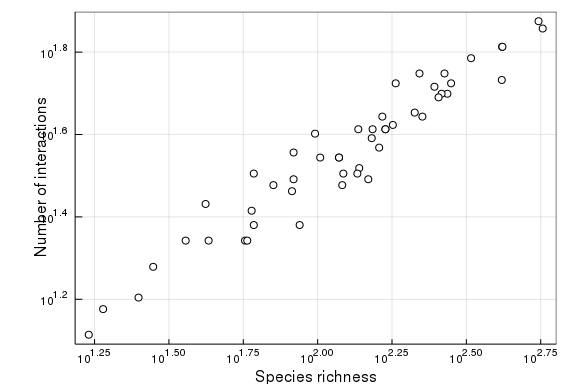

Counting objects and paging
The goal of this vignette is to see how we can count objects, i.e. get the number of entries in the database, and how we can then use this information to page through the objects, i.e. download all of the matching records. To illustrate, we will use a simple use case: plotting the relationship between number of species and number of links in a number of food webs.
using Mangal
using PlotsCounting and querying
Each type in Mangal has its own count method, which can be called without any argument to return the total number of entries in the database. For example, the total number of networks is:
count(MangalNetwork)1386We can also pass queries to the count methods. One of the most general way to query things is to use "q", which will look for a match in all text fields for the type. In this use case, we want to retrieve the dataset corresponding to Karl Havens' classical study about food web scaling, so we can look for the datasets with the string "havens" in them:
Havens_data = first(datasets("q" => "havens"))MangalDataset(15, true, "havens_1992", 1984-06-01T04:00:00, 2019-02-23T01:4
7:06, 2019-02-23T01:47:06, MangalReference(15, 1992, "10.1126/science.257.5
073.1107", missing, missing, "@article{Havens_1992, doi = {10.1126/science.
257.5073.1107}, url = {https://doi.org/10.1126%2Fscience.257.5073.1107}, ye
ar = 1992, month = {aug}, publisher = {American Association for the Advance
ment of Science ({AAAS})}, volume = {257}, number = {5073}, pages = {1107--
1109}, author = {K. Havens}, title = {Scale and Structure in Natural Food W
ebs}, journal = {Science}}", "https://doi.org/10.1126%2Fscience.257.5073.11
07", "URL of the attached data"), 3, "Pelagic communities of small lakes an
d ponds of the Adirondack")This information can be used to only count the number of networks that belong to this dataset:
count(MangalNetwork, "dataset_id" => Havens_data.id)50Note that for convenience, there is a count method that will accept a MangalDataset object to return the number of networks in this dataset. As you may assume, it does nothing more internally than what we did at the step above.
Havens_count = count(MangalNetwork, Havens_data)50Paging
Paging refers to retrieving multiple records from the database. It is regulated by two parameters: "count", the number of records to return per page (default: 100), and "page", the page number (starting at 0). In this example, we will return 10 objects per page, and so we will need to loop through multiple pages:
Havens_networks = networks(Havens_data, "count" => 10)
page = 0
while length(Havens_networks) < Havens_count
global page = page + 1
append!(Havens_networks,
networks(Havens_data, "page" => page, "count" => 10)
)
endProducing the plot
Finally, we can use additional count methods to get the number of nodes (species) and interactions within each network, to produce the figure:
LS = [
(count(MangalInteraction, n), count(MangalNode, n)) for n in Havens_networks
]
scatter(LS, c=:white, leg=false, frame=:box)
xaxis!(:log, "Species richness")
yaxis!(:log, "Number of interactions")